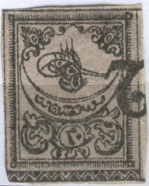

Türkei - Turquie
Return To Catalogue - Turkey overview
Note: on my website many of the
pictures can not be seen! They are of course present in the
catalogue;
contact me if you want to purchase it.
20 pa black on yellow, red border 1 Pi black on lilac, red border 2 Pi black on blue, red border 5 Pi black on red, blue border
Value of the stamps |
|||
vc = very common c = common * = not so common ** = uncommon |
*** = very uncommon R = rare RR = very rare RRR = extremely rare |
||
| Value | Unused | Used | Remarks |
| 20 pa | *** | *** | Also seems to exist with blue border |
| 1 Pi | *** | *** | Also seems to exist with blue border |
| 2 Pi | *** | *** | |
| 5 Pi | R | R | |
All values exist on thin paper, the 20 pa and 1 Pi also on thick paper. They can be found printed 'tete-beche' (only a minority of stamps has been printed in the 'normal' way). The arabic incription at the bottom of the stamp (a control overprint) extends on several stamps.
Tete-beche: image reproduced with permission from:
http://www.sandafayre.com
Postage due stamps, same design, but colours changed


20 pa black on brown, blue border 1 Pi black on brown, blue border 2 Pi black on brown, blue border 5 Pi black on brown, blue border
Value of the stamps |
|||
vc = very common c = common * = not so common ** = uncommon |
*** = very uncommon R = rare RR = very rare RRR = extremely rare |
||
| Value | Unused | Used | Remarks |
| 20 pa | *** | *** | |
| 1 Pi | *** | *** | |
| 2 Pi | R | R | |
| 5 Pi | R | R | |


The first cancels to be used on stamps of Turkey are the above stripes and dots cancels. They consist of four squares filled up with lines (upper left and lower right) and dots (upper right and lower left). These cancels were used in 1863 and 1864. Three varieties exist differing in the size (25 x 19 mm, 26 x 20 mm and 26 x 18 mm).


('Battal' cancels)
A second cancel used on these stamps is the 'Battal' cancel (which means 'cancelled'), the word 'Battal' is written in arabic (looks like some kind of 'M'), surrounded by a rectangular pattern of dots. Eight different types exist (also mainly differing in size): 25 x 20 mm (2 types, text and dots slightly different), 27 x 19 mm, 26 x 18 mm, 25 x 18 mm (3 types with text slightly different) and 26 x 19 mm.
Genuine stamps have secret marks:
20 pa: a short line joins the inner rectangle to the top frame
(about 3/4 to the right).
1 Pi ?
2 Pi: In the lower frame line with the pearls, the 4th pearl
counted from the right has a dot in it.
5 Pi: A small dot appears in the upper left corner, in the white
space between the arabesque ornament and the triangles. It is
level with the second triangle from the top.



Forgeries, note the strange '2' cancel on the 20 pa stamp. The
'tughra' (the design above the moon) is slightly different from
the genuine stamps.


Another forgery set, note the cancel 'C' with two dots. Also note
the value inscriptions, notably the '20' and '2' (both in Arabic)
in the 20 paras and 2 Pi which are different from the genuine
stamps. The '5' (in Arabic) is also different on the 5 Pi.
Other forgery of the 5 Pi value.

Very primitive forgery.

A forgery of a proof.
For stamps of Turkey issued from 1865 to 1875, click here.
{kind=link}